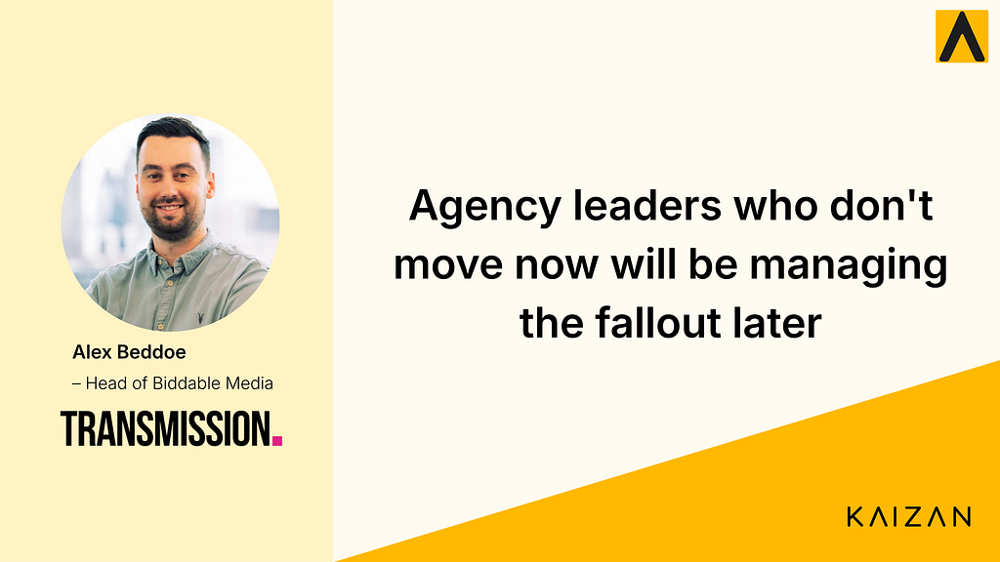

Agency leaders who don’t move now will be managing the fallout later

Alex Beddoe leads biddable media at Transmission, a global B2B agency with clients across technology, manufacturing, and professional services. We sat down with him to talk about how AI is changing the way agencies work, what genuine client relationships look like, and why visibility across your book of business matters more than ever.
Here’s what he had to say.
Watch the full conversation
Prefer to hear it in Alex's own words? Watch the full interview on YouTube.
Agencies that don’t adopt AI in the next 6 months won’t survive
Alex doesn’t soften the message. For him, AI adoption isn’t a competitive advantage right now. It’s a baseline.
“AI underpins everything we do and fuels our abilities and our services to be much more successful. I don’t think agencies that don’t adopt AI in the next 6 months will survive.”
This isn’t about replacing people. Alex is clear about that. The shift he’s describing is more structural: humans move into strategy, and AI handles execution and processing. Teams become directors of output rather than producers of it.
Effective, not just efficient
One of the more honest things Alex says is that AI isn’t saving him time. At least not yet.
“I’m more effective right now because I have the right tools, but I wouldn’t say it’s saving time at the same time. I think we’ll see that time efficiency comes as AI continues to evolve.”
It’s a distinction worth sitting with. AI is raising the quality of his team’s output before it’s reducing the hours. The time savings will come as agent-to-agent interactions mature. But right now, the value is in doing better work, not just faster work.
The hardest part of client work right now
Alex identifies the pace of innovation as the biggest operational challenge facing agency teams today.
“Staying on top of all of the innovation in the industry. We get technology come through from our partners, from our suppliers, and then also our clients. Keeping on top of that and advising the best way to utilise that technology, and joining it up so you don’t work in silos, is one of the biggest challenges we’re experiencing with clients at the moment.”
The silo problem is real. When technology arrives from multiple directions simultaneously, and each team manages it separately, the client ends up with disconnected outputs rather than a coherent strategy. The agency’s value is in the join-up, not just the tools.
Happy doesn’t mean satisfied
Perhaps the sharpest observation Alex makes is about client relationships. Specifically, the gap between a client who says they’re happy and a client who’s genuinely engaged.
“Mistaking clients being happy and comfortable with being underwhelmed with a service can often be made. Sometimes clients are conveying that they’re happy, but it’s just comfortable and easy and normal. Clients like to be challenged. They like to be given new ideas. That’s why they work with agencies.”
Comfort is not loyalty. A client who’s not complaining isn’t necessarily a client who’s retained. The best agency relationships are the ones where challenge is built into the dynamic.
Visibility changes everything
Alex manages a wide book of clients. Keeping a genuine read across all of them, without relying purely on what teams or clients report upward, was a real limitation.
“Being across so many clients, I really struggled to make sure I had a good understanding across all of our different client interactions and touch points. Now I have a much greater visibility into what’s going on on a day-to-day basis, and I understand a much greater level of depth without the subjectivity of what my teams or even our clients are telling me.”
This is the shift that Kaizan enables. Not just a dashboard, but a genuine source of truth. Leaders like Alex can see what’s actually happening across their client base and act on it, rather than working from a filtered version of reality.
What this means for agency leaders
The thread running through everything Alex says is this: the agency model is not collapsing. It’s sharpening. The teams that survive will be the ones that move into strategy, use AI as infrastructure rather than novelty, and build client relationships that go beyond comfortable.
Transmission is already operating that way. The question is whether the rest of the industry catches up.